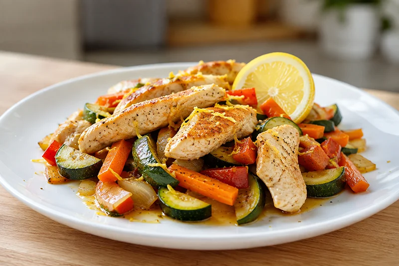

Receta saludable
Pollo al limón con verduras
El pollo al limón con verduras combina pechuga de pollo tierna con verduras salteadas y el toque fresco del limón. Una receta fácil, equilibrada y rica en proteínas para disfrutar cualquier día de la semana.
Ingredientes
- 300 g de pechuga de pollo
- 1 calabacín pequeño
- 1 zanahoria
- 1/2 pimiento rojo
- 1/2 cebolla
- 1 diente de ajo
- 1 limón
- 1 cucharada de aceite de oliva virgen extra
- Pimienta negra al gusto
- Sal al gusto
Preparación
- Corta la pechuga de pollo en dados o tiras de tamaño similar.
- Lava y corta el calabacín, la zanahoria, el pimiento y la cebolla en trozos pequeños.
- Calienta el aceite en una sartén y cocina el pollo hasta que esté dorado.
- Añade el ajo picado y las verduras, y saltea durante unos minutos hasta que estén tiernas.
- Exprime el limón sobre la preparación y mezcla bien para que se integren los sabores.
- Cocina un par de minutos más y sirve caliente.
Consejo práctico
Ralla un poco de la piel del limón antes de exprimirlo y añádela al final de la cocción. Aportará un aroma más intenso sin necesidad de utilizar más zumo.